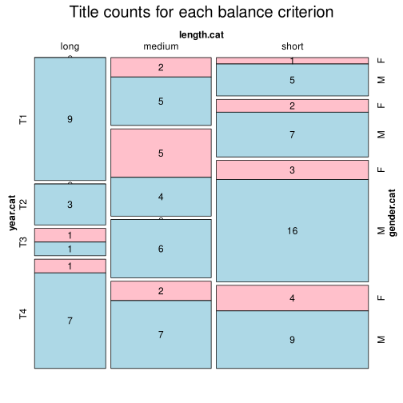

Click on a column heading to sort. Click on a text identifier to read the text (may not work in older browsers).
| Identifier | Encoding | Pages | Words | (Size) | Date (Slot) | Title | Author | Sex | Reprints |
|---|---|---|---|---|---|---|---|---|---|
| HU00011 |
eltec-0 | 493 | 65112 | (medium) | 1854 (T1) | Derű és ború | Vachott Sándorné (1828-1896) | F | low |
| HU00012 |
eltec-0 | 380 | 47321 | (short) | 1859 (T1) | Irma hagyományai | Vachott Sándorné (1828-1896) | F | low |
| HU00600 |
eltec-0 | 89 | 38365 | (short) | 1916 (T4) | A gólyakalifa | Babits Mihály (1883-1941) | M | high |
| HU00628 |
eltec-0 | 108 | 47696 | (short) | 1898 (T3) | Az ezüst kecske | Bródy Sándor (1863-1924) | M | high |
| HU00642 |
eltec-0 | 1002 | 206761 | (long) | 1845 (T1) | A falu jegyzője | Eötvös József (1813-1871) | M | high |
| HU00662 |
eltec-0 | 226 | 76646 | (medium) | 1901 (T4) | A láthatatlan ember | Gárdonyi Géza (1863-1922) | M | high |
| HU00666 |
eltec-0 | 79 | 22682 | (short) | 1857 (T1) | Egy régi udvarház utolsó gazdája | Gyulai Pál (1826–1909) | M | high |
| HU00719 |
eltec-0 | 36 | 17484 | (short) | 1916 (T4) | Tanár úr kérem | Karinthy Frigyes (1887-1938) | M | high |
| HU00726 |
eltec-0 | 45 | 20772 | (short) | 1878 (T2) | Bácsmegyeinek gyötrelmei | Kazinczy Ferenc (1759-1831) | M | low |
| HU00730 |
eltec-0 | 390 | 88579 | (medium) | 1855 (T1) | Özvegy és leánya | Kemény Zsigmond (1814-1875) | M | high |
| HU00731 |
eltec-0 | 172 | 22783 | (short) | 1876 (T2) | Szerelem és hiúság | Kemény Zsigmond (1814-1875) | M | high |
| HU00763 |
eltec-0 | 32 | 15800 | (short) | 1919 (T4) | Az útitárs | Krúdy Gyula (1878-1933) | M | low |
| HU00879 |
eltec-0 | 20 | 11346 | (short) | 1880 (T3) | Törökországi levelek | Mikes Kelemen (1690-1761) | M | high |
| HU00898 |
eltec-0 | 62 | 23646 | (short) | 1889 (T3) | A beszélő köntös | Mikszáth Kálmán (1847-1910) | M | high |
| HU00949 |
eltec-0 | 472 | 133267 | (long) | 1908 (T4) | A Noszty fiú esete Tóth Marival | Mikszáth Kálmán (1847-1910) | M | high |
| HU00954 |
eltec-0 | 198 | 53010 | (medium) | 1895 (T3) | Szent Péter esernyője | Mikszáth Kálmán (1847-1910) | M | high |
| HU00977 |
eltec-0 | 56 | 21678 | (short) | 1910 (T4) | Rab ember fiai | Móra Ferenc (1879-1934) | M | high |
| HU01009 |
eltec-0 | 84 | 25762 | (short) | 1846 (T1) | A hóhér kötele | Petőfi Sándor (1823-1849) | M | high |
| HU01115 |
eltec-0 | 491 | 90713 | (medium) | 1858 (T1) | Egy alispán | Vas Gereben (1823-1868) | M | low |
| HU01116 |
eltec-0 | 479 | 109239 | (long) | 1856 (T1) | Nagy idők, nagy emberek | Vas Gereben (1823-1868) | M | low |
| HU02028 |
eltec-0 | 198 | 62913 | (medium) | 1911 (T4) | Színek és évek | Kaffka Margit (1880-1918) | F | high |
| HU02143 |
eltec-0 | 185 | 70428 | (medium) | 1860 (T2) | A pörös atyafiak | Vas Gereben (1823-1868) | M | low |
| HU02204 |
eltec-0 | 182 | 32893 | (short) | 1852 (T1) | A kétszarvú ember | Jókai Mór (1825-1904) | M | high |
| HU03130 |
eltec-0 | 458 | 127812 | (long) | 1842 (T1) | A karthauzi | Eötvös József (1813-1871) | M | high |
| HU04774 |
eltec-0 | 766 | 201018 | (long) | 1847 (T1) | Magyarország 1514-ben | Eötvös József (1813-1871) | M | high |
| HU05060 |
eltec-0 | 116 | 50806 | (medium) | 1911 (T4) | Sárarany | Móricz Zsigmond (1879-1942) | M | high |
| HU05286 |
eltec-0 | 317 | 143418 | (long) | 1906 (T4) | Midas király | Ambrus Zoltán (1861-1932) | M | high |
| HU05572 |
eltec-0 | 579 | 139820 | (long) | 1854 (T1) | Egy magyar nábob | Jókai Mór (1825-1904) | M | high |
| HU05573 |
eltec-0 | 763 | 285818 | (long) | 1873 (T2) | És mégis mozog a föld | Jókai Mór (1825-1904) | M | high |
| HU05620 |
eltec-0 | 448 | 121526 | (long) | 1862 (T2) | Zord idő | Kemény Zsigmond (1814-1875) | M | high |
| HU05964 |
eltec-0 | 352 | 166120 | (long) | 1919 (T4) | Piroska | Cholnoky László (1879-1929) | M | low |
| HU06784 |
eltec-0 | 105 | 34574 | (short) | 1899 (T3) | Korhadt fakeresztek | Rákosi Viktor (1860-1923) | M | high |
| HU06982 |
eltec-0 | 46 | 14590 | (short) | 1895 (T3) | A lámpás | Gárdonyi Géza (1863-1922) | M | high |
| HU07119 |
eltec-0 | 109 | 48819 | (short) | 1913 (T4) | Kaleidoszkop | Cholnoky Viktor (1868-1912) | M | low |
| HU07551 |
eltec-0 | 1059 | 199822 | (long) | 1845 (T1) | Magyar titkok | Nagy Ignác (1810-1854) | M | low |
| HU07552 |
eltec-0 | 763 | 192692 | (long) | 1846 (T1) | Hazai rejtelmek | Kuthy Lajos (1813-1864) | M | low |
| HU07629 |
eltec-0 | 298 | 52303 | (medium) | 1854 (T1) | Az alföldi vadászok tanyája | Podmaniczky Frigyes (1824-1907) | M | low |
| HU07693 |
eltec-0 | 386 | 54332 | (medium) | 1861 (T2) | A száműzött leánya | Degré Alajos (1819–1896) | M | low |
| HU07694 |
eltec-0 | 344 | 47843 | (short) | 1872 (T2) | Anatole | Toldy István (1844-1879) | M | low |
| HU07703 |
eltec-0 | 294 | 60854 | (medium) | 1860 (T2) | A kis tündér | Vadnai Károly (1832-1902) | M | low |
| HU07718 |
eltec-0 | 734 | 149978 | (long) | 1875 (T2) | Kálozdy Béla | Beöthy Zsolt (1791-1860) | M | low |
| HU07729 |
eltec-0 | 236 | 111763 | (long) | 1887 (T3) | Aranyfüst | Wohl Stefánia (1848-1889) | F | low |
| HU08163 |
eltec-0 | 431 | 52587 | (medium) | 1855 (T1) | Jávor orvos és szolgája, Bakator Ambrus | Fáy András (1786-1864) | M | low |
| HU08358 |
eltec-0 | 548 | 151256 | (long) | 1920 (T4) | Édes anyaföldem! | Benedek Elek (1859-1929) | M | high |
| HU09105 |
eltec-0 | 183 | 84038 | (medium) | 1918 (T4) | A zöldköves gyűrű | Török Gyula (1888-1918) | M | high |
| HU10230 |
eltec-0 | 1013 | 238192 | (long) | 1852 (T1) | II. Rákóczi Ferencz | Jósika Miklós (1794-1865) | M | unspecified |
| HU10428 |
eltec-0 | 65 | 30933 | (short) | 1920 (T4) | A csipkeverő leány | Szomaházy István (1864-1927) | M | low |
| HU11129 |
eltec-0 | 98 | 47151 | (short) | 1918 (T4) | Bébike memoárjai | Andor Mária (1890-1960) | F | low |
| HU11795 |
eltec-0 | 202 | 41719 | (short) | 1912 (T4) | Rontó Pál viselt dolgai vizen és szárazon | Ágai Adolf (1836-1916) | M | low |
| HU11968 |
eltec-0 | 251 | 125772 | (long) | 1894 (T3) | Őserdőkön, tengereken | Donászy Ferenc (1858-1923) | M | low |
| HU12028 |
eltec-0 | 57 | 23378 | (short) | 1892 (T3) | A nagyasszony | Abonyi Árpád (1865-1918) | M | low |
| HU12359 |
eltec-0 | 124 | 62504 | (medium) | 1902 (T4) | A parasztkirály | Zigány Árpád (1865-1936) | M | low |
| HU12750 |
eltec-0 | 73 | 30756 | (short) | 1903 (T4) | A rab király szabadon | Bársony István (1863-1924) | M | low |
| HU13316 |
eltec-0 | 328 | 52170 | (medium) | 1911 (T4) | A Kont-eset | Szemere György (1866-1952) | M | low |
| HU13387 |
eltec-0 | 689 | 138886 | (long) | 1901 (T4) | Egri csillagok | Gárdonyi Géza (1863-1922) | M | high |
| HU13445 |
eltec-0 | 70 | 29473 | (short) | 1895 (T3) | Két leány és egy legény | Beöthy László (1826-1857) | M | low |
| HU13462 |
eltec-0 | 175 | 36087 | (short) | 1897 (T3) | Két világ közt | Kövér Ilma (1862-1928) | F | low |
| HU13606 |
eltec-0 | 294 | 121674 | (long) | 1907 (T4) | Forgách Simon | Werner Gyula (1862-1926) | M | low |
| HU13802 |
eltec-0 | 133 | 52809 | (medium) | 1886 (T3) | Magduska öröksége | Abonyi Lajos (1833-1898) | M | low |
| HU14125 |
eltec-0 | 56 | 26684 | (short) | 1892 (T3) | Sisyphus munkája | Csiky Gergely (1842-1891) | M | low |
| HU14197 |
eltec-0 | 121 | 58893 | (medium) | 1888 (T3) | A legszebb herczegnő | Szathmáry Károly, P. (1831-1891) | M | low |
| HU14261 |
eltec-0 | 141 | 23916 | (short) | 1895 (T3) | Lavina | Pekár Gyula (1867-1937) | M | low |
| HU14315 |
eltec-0 | 174 | 66127 | (medium) | 1898 (T3) | Képzelt királyok | Kupa Árpád (1858-1916) | M | low |
| HU14548 |
eltec-0 | 298 | 58746 | (medium) | 1881 (T3) | Régi és uj nemesek | Ábrányi Kornél (1849-1913) | M | low |
| HU14564 |
eltec-0 | 157 | 27035 | (short) | 1897 (T3) | Kisvárosiak | Herman Ottóné (1856-1916) | F | low |
| HU14664 |
eltec-0 | 115 | 50764 | (medium) | 1867 (T2) | Életképek | Tolnai Lajos (1837-1902) | M | low |
| HU14689 |
eltec-0 | 74 | 30470 | (short) | 1895 (T3) | Előre | Vértesi Arnold (1836-1911) | M | low |
| HU14745 |
eltec-0 | 166 | 73249 | (medium) | 1866 (T2) | Két sziv harcza | Beniczkyné Bajza Lenke (1839-1905) | F | low |
| HU14769 |
eltec-0 | 339 | 61512 | (medium) | 1878 (T2) | Itt és a jövő életben | Beniczkyné Bajza Lenke (1839-1905) | F | low |
| HU16123 |
eltec-0 | 445 | 94912 | (medium) | 1896 (T3) | Az utolsó | Malonyay Dezső (1866-1916) | M | low |
| HU16124 |
eltec-0 | 105 | 41351 | (short) | 1896 (T3) | A szemfényvesztők | Bartók Lajos (1851-1902) | M | low |
| HU16127 |
eltec-0 | 158 | 27221 | (short) | 1896 (T3) | Salve Regina | Palotás Fausztin (1855-1922) | M | low |
| HU16243 |
eltec-0 | 72 | 29198 | (short) | 1892 (T3) | A bukottak | Beksics Gusztávné (1849-1903) | F | high |
| HU16328 |
eltec-0 | 56 | 24832 | (short) | 1891 (T3) | Görbe hegyek országában | Tábori Róbert (1855-1906) | M | low |
| HU16344 |
eltec-0 | 237 | 123386 | (long) | 1909 (T4) | A Bakony | Eötvös Károly (1842-1916) | M | low |
| HU16355 |
eltec-0 | 41 | 19404 | (short) | 1893 (T3) | A darázs mérge | Kada Elek (1852-1913) | M | low |
| HU16359 |
eltec-0 | 92 | 34914 | (short) | 1893 (T3) | Félvér | Prém József (1850-1910) | M | high |
| HU16361 |
eltec-0 | 28 | 14135 | (short) | 1856 (T1) | Vagy idejében vagy soha | Boross Mihály (1815-1899) | M | low |
| HU16529 |
eltec-0 | 131 | 51818 | (medium) | 1914 (T4) | Csillagok a Tiszában | Ábrahám Ernő(1882-1945) | M | low |
| HU16600 |
eltec-0 | 78 | 31026 | (short) | 1908 (T4) | Az arany polgár | Lovik Károly (1874-1915) | M | low |
| HU16672 |
eltec-0 | 209 | 22875 | (short) | 1869 (T2) | Egy magyar amazon | Kovács József (1832-1897) | M | low |
| HU16824 |
eltec-0 | 262 | 47729 | (short) | 1908 (T4) | A nagy véletlen | Ritoók Emma (1868-1945) | F | low |
| HU17048 |
eltec-0 | 116 | 53753 | (medium) | 1908 (T4) | A jövő fészke | Kabos Ede (1864-1923) | M | low |
| HU17435 |
eltec-0 | 742 | 160251 | (long) | 1920 (T4) | Bujdosó könyv | Tormay Cécile (1876-1937) | F | high |
| HU17606 |
eltec-0 | 301 | 57333 | (medium) | 1919 (T4) | Tabu | Teleki Sándorné (1864-1937) | F | low |
| HU17653 |
eltec-0 | 92 | 36053 | (short) | 1908 (T4) | Két arany hajszál | Czóbel Minka (1855-1947) | F | low |
| HU17694 |
eltec-0 | 85 | 34961 | (short) | 1906 (T4) | Amire születtünk | Lux Terka (1873-1938) | F | low |
| HU17873 |
eltec-0 | 220 | 28349 | (short) | 1864 (T2) | Az élet esélyei | Jósika Júlia (1813-1893) | F | low |
| HU17910 |
eltec-0 | 129 | 38707 | (short) | 1872 (T2) | Konrád | Jósika Júlia (1813-1893) | F | low |
| HU17960 |
eltec-0 | 150 | 29457 | (short) | 1866 (T2) | Egy cserepár naplója | Virághalmi Ferenc (1826-1875) | M | low |
| HU17999 |
eltec-0 | 261 | 60532 | (medium) | 1863 (T2) | Szeretet könyve | Kánya Emília (1830-1910) | F | low |
| HU18153 |
eltec-0 | 253 | 47550 | (short) | 1848 (T1) | Szúnyogok | Nagy Ignác (1810-1854) | M | low |
| HU18411 |
eltec-0 | 163 | 35541 | (short) | 1860 (T2) | 48-tól Világosig | Ábrai Károly (1830-1912) | M | low |
| HU18535 |
eltec-0 | 255 | 45870 | (short) | [1882] (T3) | Köd | Gozsdu Elek (1863-1924) | M | low |
| HU18964 |
eltec-0 | 556 | 56940 | (medium) | 1862 (T2) | Családélet | Jósika Júlia (1813-1893) | F | low |
| HU18993 |
eltec-0 | 438 | 74428 | (medium) | 1860 (T2) | Válságos napok | Kánya Emília (1830–1910) | F | low |
| HU19000 |
eltec-0 | 77 | 38109 | (short) | 1878 (T2) | Álmok álmodója | Asbóth János (1845-1911) | M | high |
| HU19006 |
eltec-0 | 188 | 68494 | (medium) | 1846 (T1) | Meghasonlott kedély | Kelmenfy László (1815-1851) | M | low |
| HU19018 |
eltec-0 | 459 | 63890 | (medium) | 1857 (T1) | Margit | Vachott Sándorné (1828-1896) | F | low |
| HU19040 |
eltec-0 | 854 | 149986 | (long) | 1844 (T1) | Torzképek | Nagy Ignác (1810-1854) | M | low |